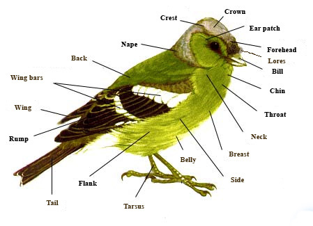

Friday, August the 17th, 2012
back to: title, date or indexes
Following last week's postage of Unit's smash hit 201 Birds, I thought it would be a good idea to post the original Hooting Yard On The Air episode in which I list 601 birds (together with a few film directors, etcetera). Listen and learn.
♪♪♪♪ 601 Birds ♪♪♪♪
